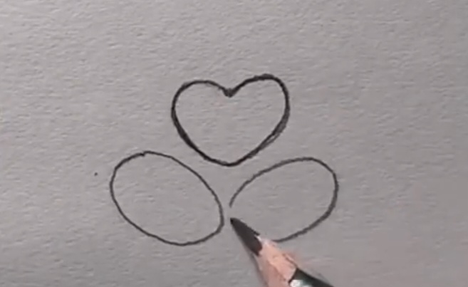
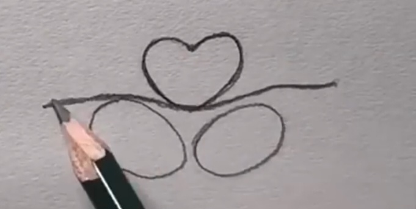
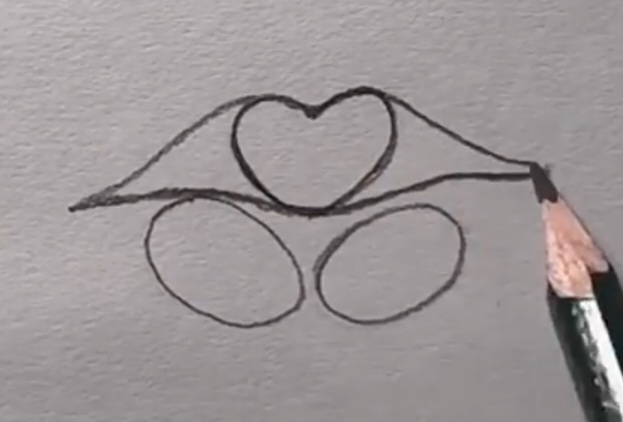
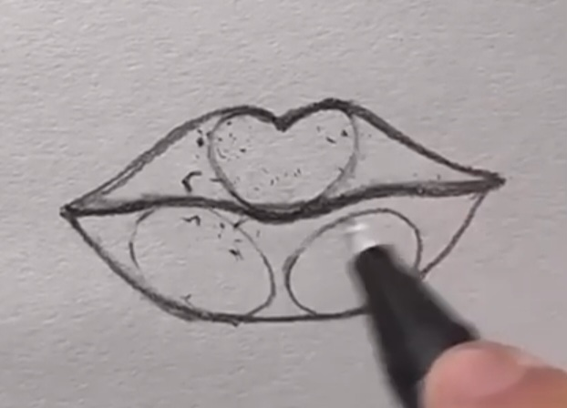
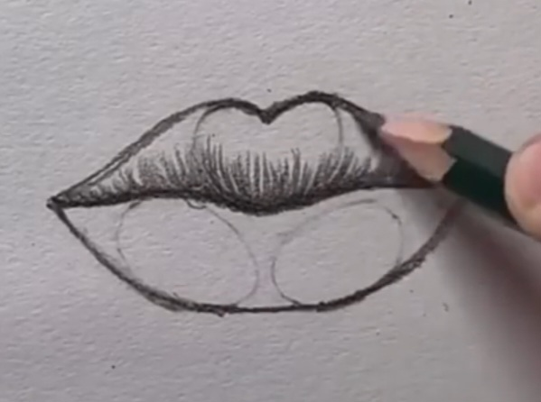
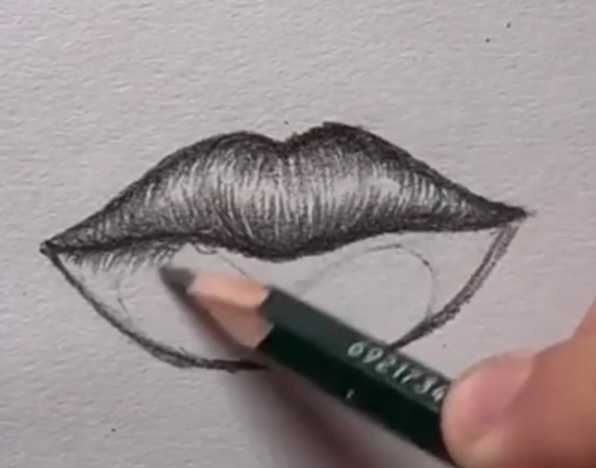
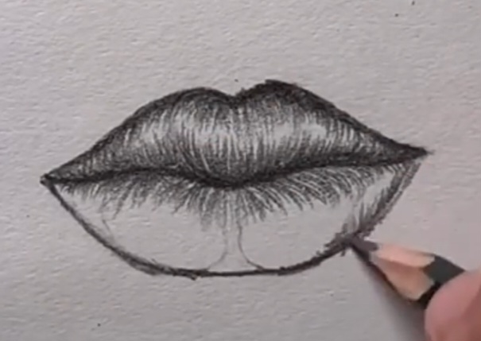
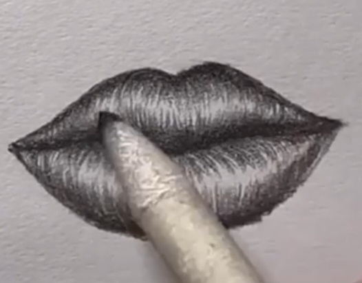
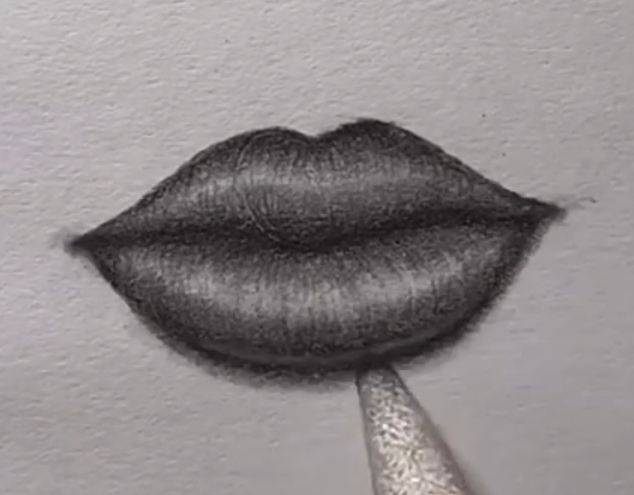

Course #2: Drawing the Lips
Hello and welcome! In this course, we’ll focus on drawing lips step by step. If you’ve already completed the course on drawing the nose, you’re well on your way to mastering facial features. By the end of this lesson, you’ll be able to create lips as shown below. Let’s dive in!

Step #1: Draw a heart with two circles underneath

Start by drawing a heart shape that represents the upper part of the lips, with two small circles directly beneath it to mark the lower lip.
Step #2: Add a line between the heart and the circles

Draw a horizontal line between the heart and the circles to connect the upper and lower lip forms.
Step #3: Draw the upper lip by connecting the sides of the line to the heart above

Use the line as a guide to form the upper lip by connecting the ends of the line to the heart shape.
Step #4: Draw the bottom lip using the circles as a guide

Shape the bottom lip by following the curve of the circles, ensuring it aligns with the natural flow of the lip.
Step #5: Shade the lower part of the upper lip

Begin shading the lower portion of the upper lip, adding depth and dimension to the lip shape.
Step #6: Shade the upper part of the upper lip

Now shade the upper part of the upper lip to create contrast and definition, blending the shading with the rest of the lip.
Step #7: Shade the bottom lip in the same way as the upper lip

Now apply similar shading techniques to the bottom lip, starting from the top and working downward, to create a consistent look across both lips.
Step #8: Smooth everything together, add better shading, and refine the details


Now, smooth out the shading to make the lips more realistic. Add any necessary details, like softer shadows and highlights, and refine the lip shape to give it more depth and a natural finish. Congrats!